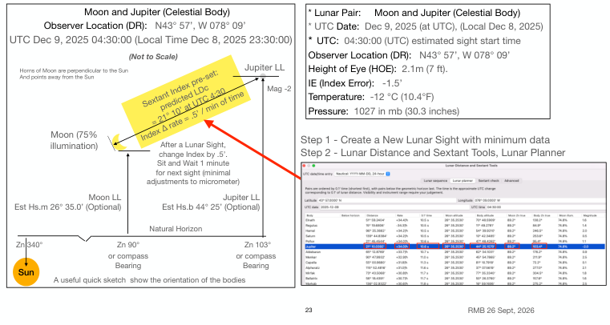

| Previous | Contents | Next |
Lunar distances · Page 54 of 66
10 Planning for Lunar Sights
Use Case 2 Lunar Distance for Moon and Jupiter
 |
| Open illustration at full size |
Moon and Jupiter (Celestial Body)
Observer Location (DR): N43° 57’, W 078° 09’
UTC Dec 9, 2025 04:30:00 (Local Time Dec 8, 2025 23:30:00)
* Lunar Pair: Moon and Jupiter (Celestial Body) * UTC Date: Dec 9, 2025 (at UTC), (Local Dec 8, 2025) * UTC: 04:30:00 (UTC) estimated sight start time Observer Location (DR): N43° 57’, W 078° 09’ Height of Eye (HOE): 2.1m (7 ft). IE (Index Error): -1.5’ Temperature: -12 °C (10.4°F) Pressure: 1027 in mb (30.3 inches)
Step 1 - Create a New Lunar Sight with minimum data Step 2 - Lunar Distance and Sextant Tools, Lunar Planner
| Previous | Contents | Next |